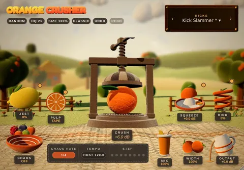

Plugins for Ableton Live
We test every plugin in Ableton Live. All 16 load as VST3 on Mac and Windows, and as Audio Units on Mac.
Black Friday: all 16 plugins for $29 with the Full Fridge (was $50), until 1 December. See the deals
Run the installer, then in Live open Settings, Plug-Ins, turn on the VST3 system folders and click Rescan. Our plugins appear under Plug-Ins, Plugins for Breakfast.
The tempo-synced ones (glitch, gate, delay, auto-pan, filter) follow Live's tempo, so they are easy to drop on a clip and automate.
Step-by-step help, including the Windows first-run box: Installing safely.
What to reach for
- Popping Candy (glitch and stutter). Glitch and stutter on random steps, locked to Live's tempo.
- Muesli Granular (granular). Granular textures and shimmer.
- Noodle Filter (filter). A resonant filter with built-in movement.
- Gummy Gate (gate). A gate and trance gate for chopped pads.
- Orange Crusher (distortion). Saturation for kicks, rumbles and bass.
- Spaghetti Delay (delay). Delay with freeze and ducking.
- Ghost Pepper Clipper (clipper). A clean clipper for loud drums.
- Cherry on the Top Mastering (mastering). One-dial mastering.
 Popping CandyGlitch and stutter plugin
Popping CandyGlitch and stutter plugin Muesli GranularGranular effect plugin
Muesli GranularGranular effect plugin Noodle FilterFilter plugin
Noodle FilterFilter plugin Gummy GateGate plugin
Gummy GateGate plugin
Orange CrusherDistortion and saturation plugin Spaghetti DelayDelay plugin
Spaghetti DelayDelay plugin Ghost Pepper ClipperClipper plugin
Ghost Pepper ClipperClipper plugin Cherry on the Top MasteringMastering plugin
Cherry on the Top MasteringMastering plugin
Get all 16 in the Full FridgeTry them free first
Recipes to try
Questions
How do I add VST3 plugins to Ableton Live?
Open Settings, Plug-Ins, switch on the VST3 system folders and click Rescan. The plugins then appear in the browser under Plug-Ins.
Are they good for techno and house?
Yes. Saturation and the clipper for kicks and rumbles, the trance gate and filter for movement, and the delay and reverb for space.
Can I try them before buying?
Yes. Every plugin has a 3-day free trial, and Butter Spread, our stereo widener, comes with a free licence.
More menus
Lo-fiVocalsDrumsMasteringBeginnersCreative effectsHip hop and trapFL StudioLogic ProPro Tools